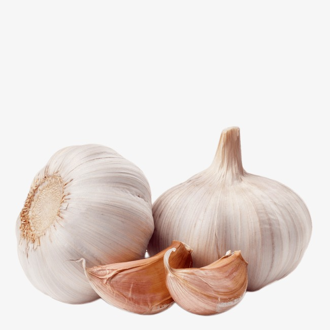
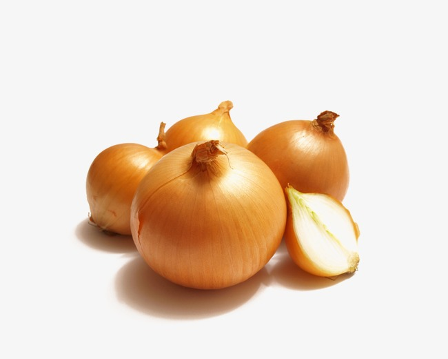
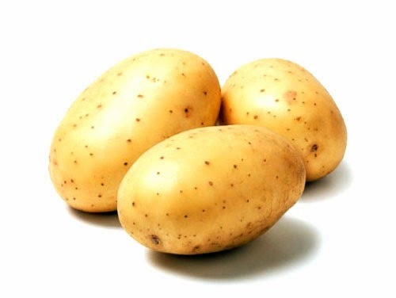
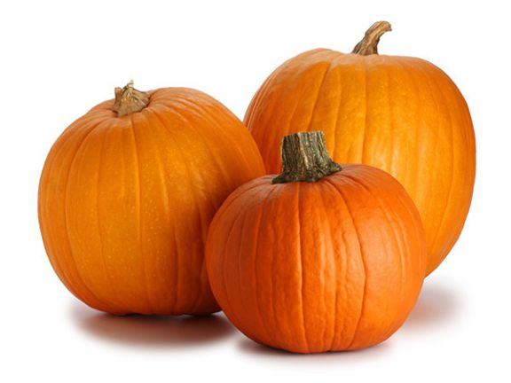
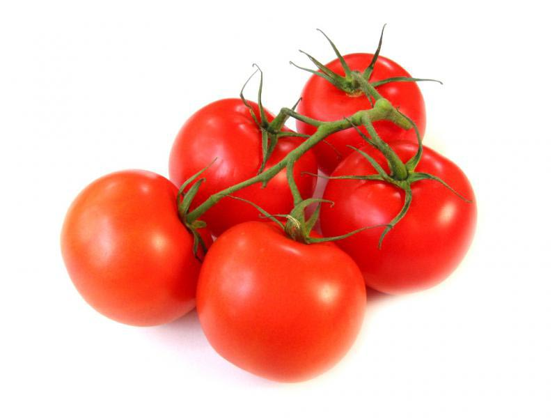
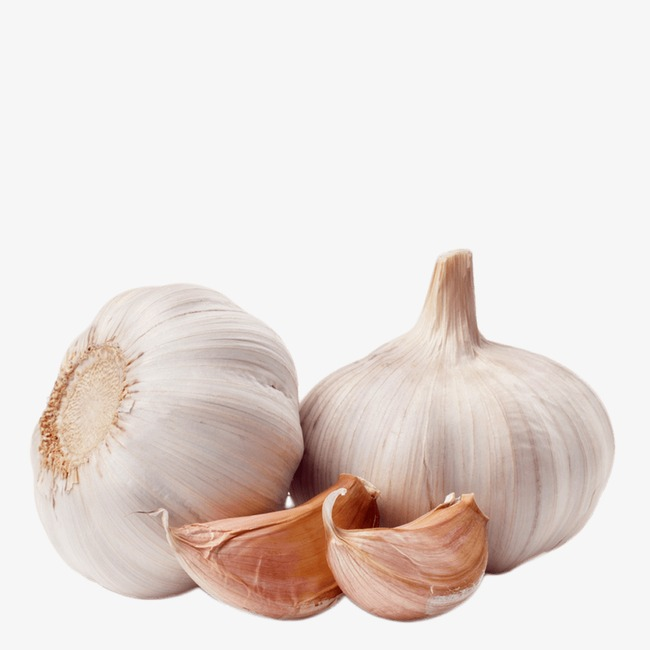
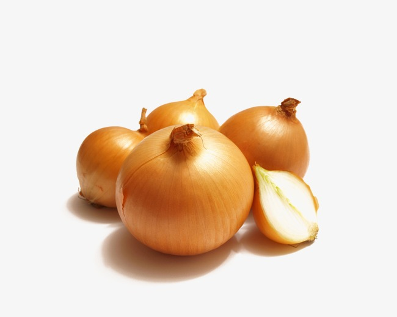
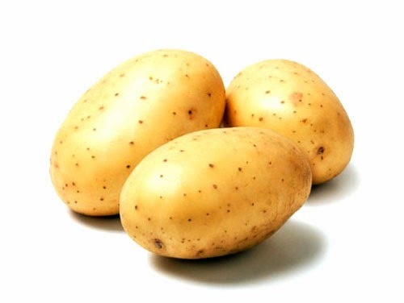
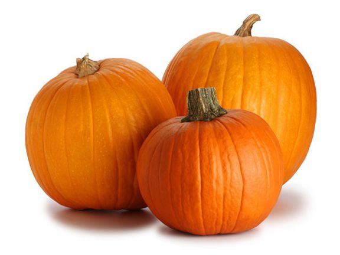
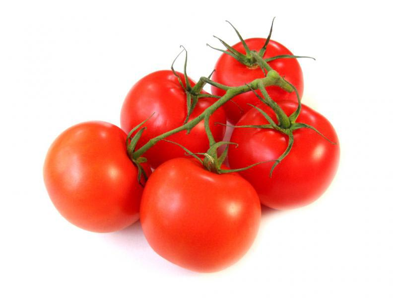

Капуста принадлежит к числу важнейших овощных растений. Она введена в культуру, по-видимому, в доисторические времена. Возделывали капусту древние египтяне, а позднее освоили технологию её выращивания древние греки и римляне, им было известно всего от 3 до 10 сортов капусты. Древнегреческий философ и математик Пифагор весьма ценил лечебные свойства капусты и занимался её селекцией. Южные племена славян впервые узнали о капусте от греко-римских колонистов, живших в районах Причерноморья. Со временем познакомились с этой овощной культурой и на Руси.
Корни и плоды дикой и культурной моркови могут быть использованы как пряность. Плоды, обладающие жгучим пряным вкусом, употребляют как приправу к кушаньям, используют в маринадах, ликёро-наливочном производстве. Испытаны и одобрены в качестве пряности при обработке рыбы. Плоды могут найти применение в консервной промышленности. Корнеплоды культурной моркови используют в пищу в сыром и варёном виде для приготовления первых и вторых блюд, пирогов, цукатов, маринадов, консервов, детских пюре и др. Из моркови получают морковный сок и каротин.
Плоды растения — огурцы пригодны для пищи в сыром виде, так же широко используются в кулинарии в качестве ингредиентов разнообразных блюд, в том числе используются для консервирования различными способами, в том числе повсеместно известны малосольные огурцы, маринованные и солёные огурцы.
Благодаря острому вкусу чеснок широко используется во всём мире как приправа. Он является важным элементом многих блюд в различных регионах, например, в Восточной и Южной Азии, на Среднем Востоке и в Северной Африке; чеснок — непременный атрибут средиземноморской кухни. В Корее и Японии головки чеснока квасят при высоких температурах; полученный продукт, называемый «чёрный чеснок»[en], имеет приторно-сладкий вкус; его можно купить в США, Великобритании и Австралии, его стали производить и продавать в России. Стрелки чеснока квасят, солят, маринуют, тушат. Вкусны жареные листья молодого растения.
Репчатый лук — одна из важнейших овощных культур. Луковицы и листья используются как приправа в консервной промышленности, к салатам, винегретам, грибам, овощным и мясным блюдам, а также как пряно-витаминная закуска и вкусовая добавка к супам, соусам, подливкам, фаршам. Чаще всего лук употребляется в сыром виде или поджаренным на сале или растительном масле до золотистого цвета. Сырой лук отлично дополняет колбасные и мясные изделия, творог, сыры, хлеб с салом. Кухонное приспособление для измельчения лука называется лукорубка.
Картофель варят как очищенным, так и неочищенным («в мундире»), что позволяет сохранить максимум полезных веществ. Его также готовят на углях или на пару, тушат, жарят во фритюре (см. картофель фри) и без него (см. жареный картофель). Картофель используется как в простых, так и в изысканных блюдах — для приготовления картофельного салата, картофельного пюре, супов, закусок вроде чипсов, дижестивов и даже десертов.
В отличие от декоративных, съедобные сорта тыквы употребляются в пищу. После тепловой обработки варёная или печёная тыква очень хорошо усваивается организмом и широко применяется даже для детского и диетического питания. Также хорошо используется для салатов и гарниров. В качестве лекарственного сырья используют семя тыквы — зрелые, очищенные от остатков околоплодника и высушенные без подогрева семена. Сушат их на открытом воздухе под навесами или на чердаках с хорошей вентиляцией, рассыпав тонким слоем. При несоблюдении правил сушки они темнеют, плесневеют и приобретают посторонний запах. Применяют семена тыквы как противоглистное средство против ленточных глистов.
Томат сегодня — одна из самых популярных культур благодаря своим ценным питательным и диетическим качествам, большому разнообразию сортов, высокой отзывчивости на применяемые приёмы выращивания. Его возделывают в открытом грунте, под плёночными укрытиями, в теплицах, парниках, на балконах, лоджиях и даже в комнатах на подоконниках. Плоды томата употребляют в пищу свежими, варёными, жареными, консервированными, из них готовят томат-пасту, томат-пюре, томатный сок, кетчуп и другие соусы, лечо. В Испании популярны холодные томатные супы — гаспачо, сальморехо. В бывшем СССР томаты принято мариновать на зиму (см. маринованные томаты).
 








